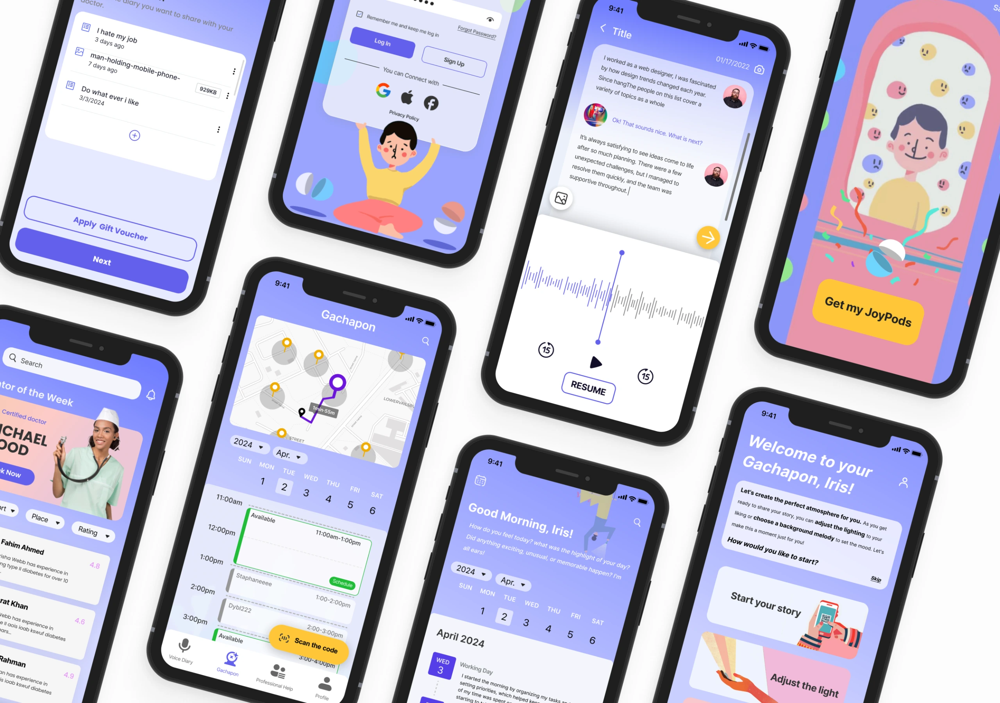
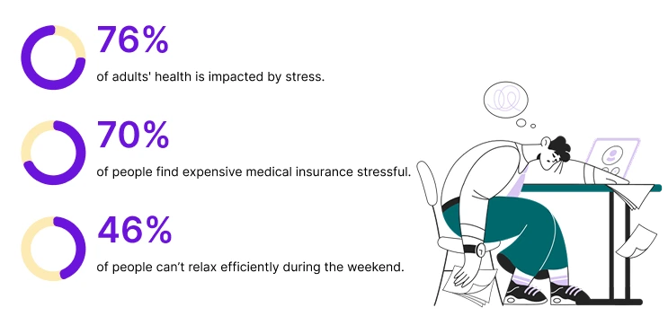
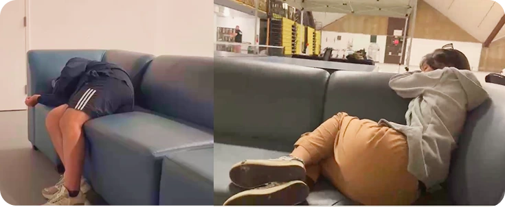
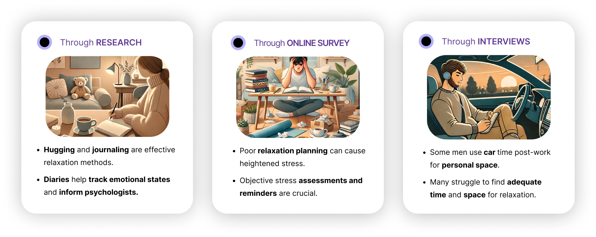
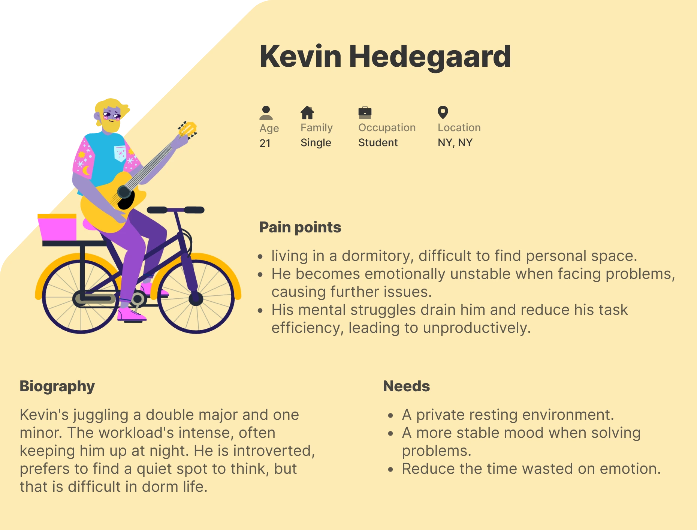
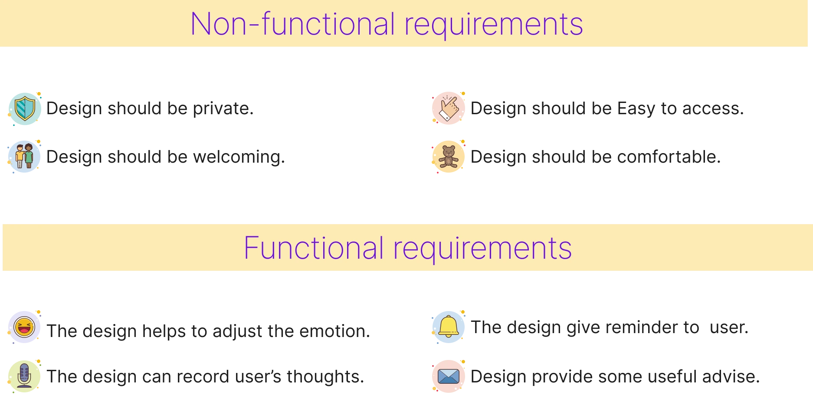
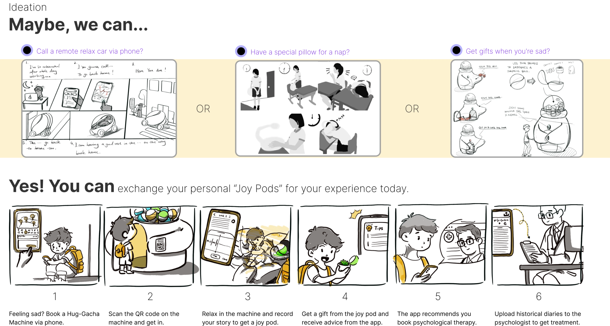
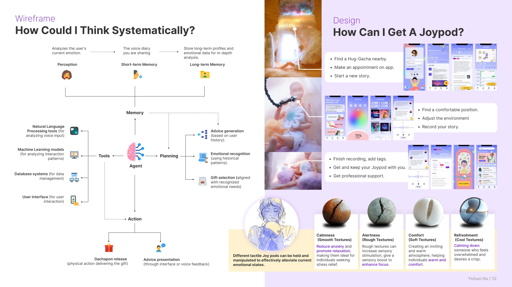
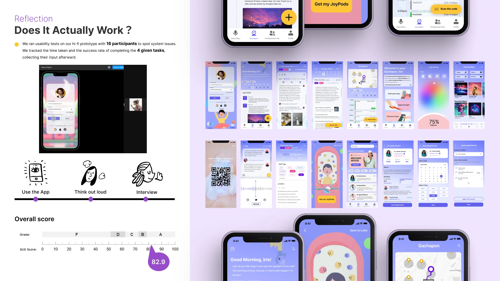

Hug - Gacha
A wellness app that pairs voice journaling with personalized feedback and gacha-inspired rewards.
View full process
Project Overview
Hug - Gacha is a mobile wellness app that combines voice journaling with emotional support through a unique gacha-style reward system. Users record their daily emotions and receive personalized gifts and AI-generated advice, creating a playful yet meaningful space for emotional reflection.
Problem & Solution
The Problem
Modern society's insufficient emotional support, especially for those dealing with stress and negative emotions, is worsened by increasing pressures from work, study, and daily life. Traditional support like counseling often fails to offer immediate, interactive help.

Today's young people lack of personal space, squeezed by the demands of modern life and constant connectivity. This shortage can exacerbate stress and diminish mental well-being.

Research Methods

Problem Space
Emotional Disconnect
Users struggle to identify and articulate their emotions, often dismissing stress until it becomes overwhelming.
Lack of Immediate Support
Traditional therapy requires scheduling and commitment, leaving users without immediate emotional outlets during stressful moments.
Low Engagement
Existing wellness apps lack motivation systems, resulting in low user retention and inconsistent usage patterns.
Privacy Concerns
Users fear judgment when sharing emotions, especially in social platforms or group settings.
Primary Persona: Kevin Hedegaard


HOW MIGHT WE HELP USERS UNDERSTAND THE NEGATIVE IMPACTS OF STRESS, CREATE A SUPPORTIVE ENVIRONMENT, MAKE A REASONABLE PLAN, AND MANAGE STRESS EFFECTIVELY?

Wireframe & Design
System Architecture & User Journey
The design process integrates systematic thinking with empathetic user experience design, combining AI-powered emotional analysis with intuitive interaction flows and physical tactile feedback through Joypods.

Impact & Learning
User Engagement
The gamified approach successfully encourages daily check-ins, with users reporting higher motivation to maintain their emotional wellness practice.
Emotional Safety
Private, non-judgmental space allows introverts to express themselves freely without social pressure or fear of exposure.
Design Insights
Learned how to balance playful gamification with sensitive emotional content, ensuring the experience remains respectful and supportive.
Reflection
Does It Actually Work?
